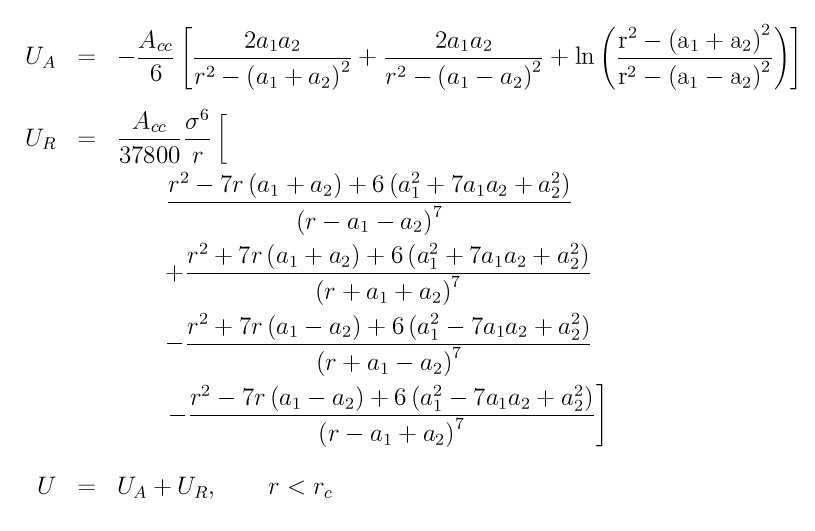

pair_style colloid command¶
pair_style colloid/gpu command¶
pair_style colloid/omp command¶
Syntax¶
pair_style colloid cutoff
- cutoff = global cutoff for colloidal interactions (distance units)
Examples¶
pair_style colloid 10.0
pair_coeff * * 25 1.0 10.0 10.0
pair_coeff 1 1 144 1.0 0.0 0.0 3.0
pair_coeff 1 2 75.398 1.0 0.0 10.0 9.0
pair_coeff 2 2 39.478 1.0 10.0 10.0 25.0
Description¶
Style colloid computes pairwise interactions between large colloidal particles and small solvent particles using 3 formulas. A colloidal particle has a size > sigma; a solvent particle is the usual Lennard-Jones particle of size sigma.
The colloid-colloid interaction energy is given by
where A_cc is the Hamaker constant, a1 and a2 are the radii of the two colloidal particles, and Rc is the cutoff. This equation results from describing each colloidal particle as an integrated collection of Lennard-Jones particles of size sigma and is derived in (Everaers).
The colloid-solvent interaction energy is given by

where A_cs is the Hamaker constant, a is the radius of the colloidal particle, and Rc is the cutoff. This formula is derived from the colloid-colloid interaction, letting one of the particle sizes go to zero.
The solvent-solvent interaction energy is given by the usual Lennard-Jones formula

with A_ss set appropriately, which results from letting both particle sizes go to zero.
When used in combination with pair_style yukawa/colloid, the two terms become the so-called DLVO potential, which combines electrostatic repulsion and van der Waals attraction.
The following coefficients must be defined for each pair of atoms types via the pair_coeff command as in the examples above, or in the data file or restart files read by the read_data or read_restart commands, or by mixing as described below:
- A (energy units)
- sigma (distance units)
- d1 (distance units)
- d2 (distance units)
- cutoff (distance units)
A is the Hamaker energy prefactor and should typically be set as follows:
- A_cc = colloid/colloid = 4 pi^2 = 39.5
- A_cs = colloid/solvent = sqrt(A_cc*A_ss)
- A_ss = solvent/solvent = 144 (assuming epsilon = 1, so that 144/36 = 4)
Sigma is the size of the solvent particle or the constituent particles integrated over in the colloidal particle and should typically be set as follows:
- Sigma_cc = colloid/colloid = 1.0
- Sigma_cs = colloid/solvent = arithmetic mixing between colloid sigma and solvent sigma
- Sigma_ss = solvent/solvent = 1.0 or whatever size the solvent particle is
Thus typically Sigma_cs = 1.0, unless the solvent particle’s size != 1.0.
D1 and d2 are particle diameters, so that d1 = 2*a1 and d2 = 2*a2 in the formulas above. Both d1 and d2 must be values >= 0. If d1 > 0 and d2 > 0, then the pair interacts via the colloid-colloid formula above. If d1 = 0 and d2 = 0, then the pair interacts via the solvent-solvent formula. I.e. a d value of 0 is a Lennard-Jones particle of size sigma. If either d1 = 0 or d2 = 0 and the other is larger, then the pair interacts via the colloid-solvent formula.
Note that the diameter of a particular particle type may appear in multiple pair_coeff commands, as it interacts with other particle types. You should insure the particle diameter is specified consistently each time it appears.
The last coefficient is optional. If not specified, the global cutoff specified in the pair_style command is used. However, you typically want different cutoffs for interactions between different particle sizes. E.g. if colloidal particles of diameter 10 are used with solvent particles of diameter 1, then a solvent-solvent cutoff of 2.5 would correspond to a colloid-colloid cutoff of 25. A good rule-of-thumb is to use a colloid-solvent cutoff that is half the big diameter + 4 times the small diameter. I.e. 9 = 5 + 4 for the colloid-solvent cutoff in this case.
Note
When using pair_style colloid for a mixture with 2 (or more) widely different particles sizes (e.g. sigma=10 colloids in a background sigam=1 LJ fluid), you will likely want to use these commands for efficiency: neighbor multi and comm_modify multi.
Styles with a cuda, gpu, intel, kk, omp, or opt suffix are functionally the same as the corresponding style without the suffix. They have been optimized to run faster, depending on your available hardware, as discussed in Section_accelerate of the manual. The accelerated styles take the same arguments and should produce the same results, except for round-off and precision issues.
These accelerated styles are part of the USER-CUDA, GPU, USER-INTEL, KOKKOS, USER-OMP and OPT packages, respectively. They are only enabled if LAMMPS was built with those packages. See the Making LAMMPS section for more info.
You can specify the accelerated styles explicitly in your input script by including their suffix, or you can use the -suffix command-line switch when you invoke LAMMPS, or you can use the suffix command in your input script.
See Section_accelerate of the manual for more instructions on how to use the accelerated styles effectively.
Mixing, shift, table, tail correction, restart, rRESPA info:
For atom type pairs I,J and I != J, the A, sigma, d1, and d2 coefficients and cutoff distance for this pair style can be mixed. A is an energy value mixed like a LJ epsilon. D1 and d2 are distance values and are mixed like sigma. The default mix value is geometric. See the “pair_modify” command for details.
This pair style supports the pair_modify shift option for the energy of the pair interaction.
The pair_modify table option is not relevant for this pair style.
This pair style does not support the pair_modify tail option for adding long-range tail corrections to energy and pressure.
This pair style writes its information to binary restart files, so pair_style and pair_coeff commands do not need to be specified in an input script that reads a restart file.
This pair style can only be used via the pair keyword of the run_style respa command. It does not support the inner, middle, outer keywords.
Restrictions¶
This style is part of the COLLOID package. It is only enabled if LAMMPS was built with that package. See the Making LAMMPS section for more info.
Normally, this pair style should be used with finite-size particles which have a diameter, e.g. see the atom_style sphere command. However, this is not a requirement, since the only definition of particle size is via the pair_coeff parameters for each type. In other words, the physical radius of the particle is ignored. Thus you should insure that the d1,d2 parameters you specify are consistent with the physical size of the particles of that type.
Per-particle polydispersity is not yet supported by this pair style; only per-type polydispersity is enabled via the pair_coeff parameters.